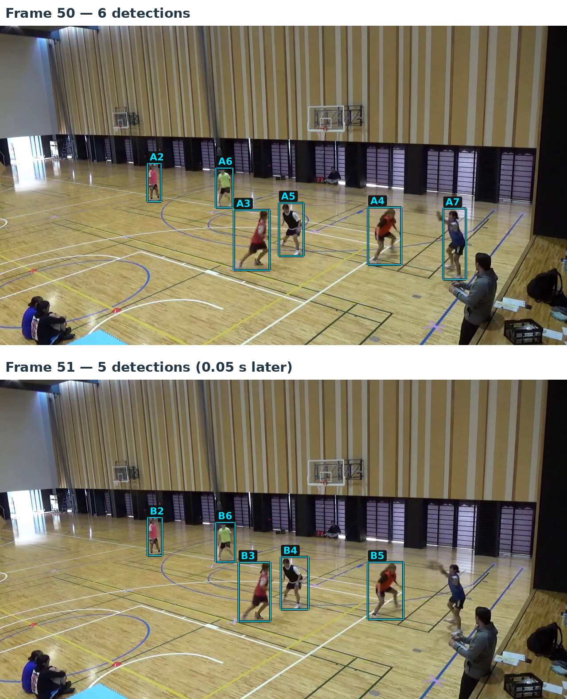
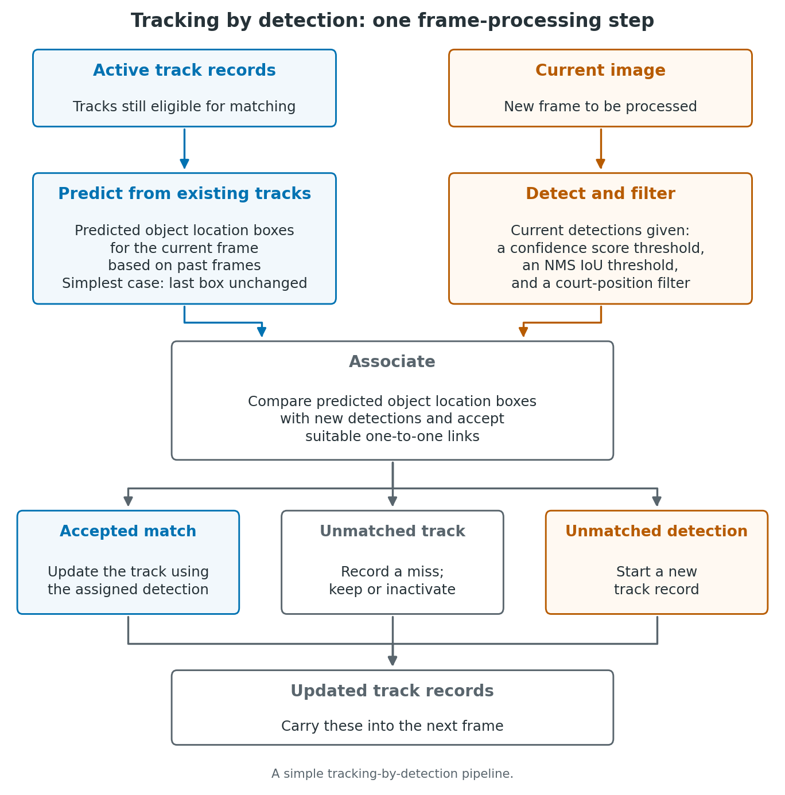
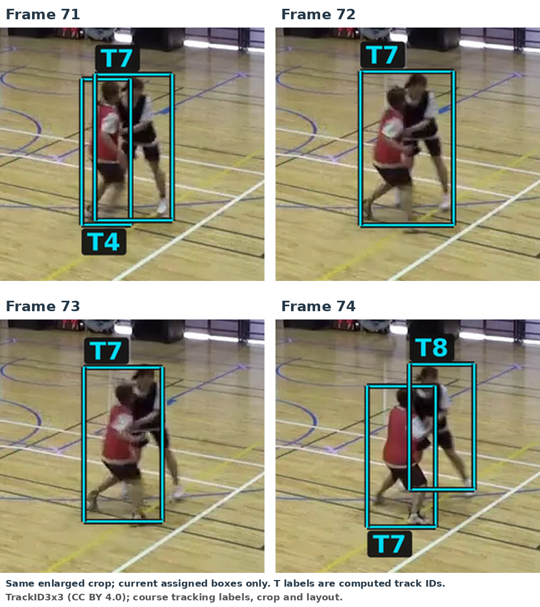
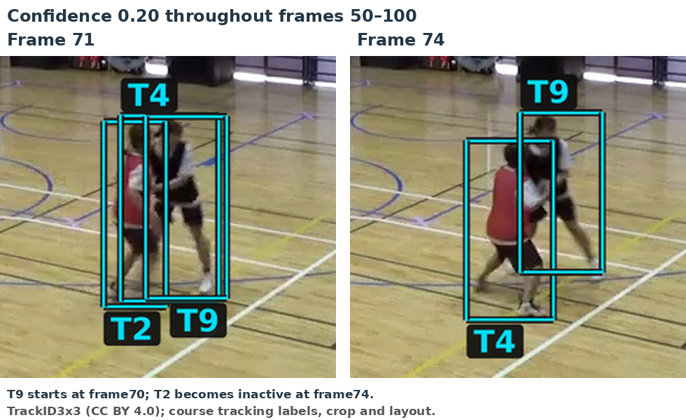

10 Basic tracking
10.1 Linking detections across frames
A detector gives us a set of boxes in each frame. Our next task is to determine which detections belong to the same player over time.
The two frames below are consecutive, about 0.05 seconds apart. As before, we keep the saved YOLO11n person detections with confidence at least 0.50 and apply the court filter. We map each box’s bottom-centre to court coordinates and retain it if \(0\leq X\leq9.50\) and \(0\leq Y\leq15.05\) metres. We use this court filter throughout the tracking examples below.
We label the confidence-selected boxes in descending confidence order before court filtering, using A for frame 50 and B for frame 51. The retained boxes are A2–A7 and B2–B6; the gaps in the numbering correspond to boxes removed by the court filter.
Which box in frame 51 corresponds to A5 in frame 50?

A5 and B4 surround the same player. We want to link these detections under a common track ID and keep that ID as we follow the player through later frames. The linked detections form a track, from which we can estimate the player’s trajectory.
The player in A7 is still visible in frame 51, but none of the saved boxes around them passes our confidence threshold of 0.50. Tracking must therefore also allow for gaps in the observations, so that a player can retain the same track ID when a detection reappears.
10.2 Our approach to tracking
We want to follow the six on-court players through the video from our fixed camera, keeping a consistent ID for each player. This is a multi-object tracking (MOT) problem. The goal is to construct ‘object tracks’ that estimate consistent trajectories of objects (here, people) over time rather than just detect the objects in separate frames.
Some terminology:
| Term | Meaning here |
|---|---|
| Object or target | A physical player we want to follow. |
| Detection | A detector’s output for one frame: a proposed box, class and confidence. |
| Track | A record maintained by the algorithm to follow what it treats as the same object over time, including an ID, assigned detections, and other properties associated to the object. |
When a player detection is missed, a track can still persist by allowing a certain number of ‘miss’ records in a row before dropping it from active matching. If a detection is made in a subsequent frame after a miss in a preceding frame, and the track is still considered active and is assigned that detection, the track incorporates the new detection and continues. Of course, a track can include accidental identity swaps, in which different players are associated with the same track at different times. In general, however, the goal is to associate a consistent object identity with each track.
Here we use tracking-by-detection. A detector supplies observations for each frame, and the tracker links them over time. Our tracker here is online: it processes frames in order using only current and past information, without looking ahead to later frames. Here we generate the detections in advance, as in our supplied CSV, but in principle only need those at the present and past, not future.

For each new frame, we predict object location boxes for the object tracks still eligible for matching. We compare these boxes with the current detections. Association chooses which detections to assign to which object location predictions and hence which object tracks. Accepted detections update the track records. We also need rules for retaining or inactivating unmatched tracks and starting new tracks from unmatched detections. Together, these are the track-management rules.
We can represent a player’s current state simply in a frame using box position and size. Later we can add motion information like velocity to improve next-frame predictions. A motion model describes how the state of the objects changes between frames. The simplest prediction rule we consider is to simply reuse the last observed box for an object unchanged for the new frame. We then consider a constant-velocity prediction while keeping the rest of the tracking loop the same.
Trackers can be made more sophisticated in various ways. For example, detector boxes provide imperfect observations of the state (e.g. player locations), while we estimate velocities from observations across frames. We can introduce an explicit observation model to account for the difference between what we observe and the true system state, leading to ideas like (Kalman) filtering. Some approaches also incorporate appearance models that describe what an object looks like (potentially learned online), which can provide additional information for the association step when positions alone are not enough. Tracking can also be performed offline, using later frames to revise earlier associations.
Finally, some systems aim to learn detection and tracking jointly rather than keeping these components separate. Here we stick to this modular, online approach for simplicity and efficiency.
10.3 Comparing detections using IoU
We can reuse the box_iou function to compare boxes across frames. Here, both inputs are detection boxes: one from frame 50 and one from frame 51, rather than an annotation box and a detection box.
We compare the boxes using the same image coordinates. With a fixed camera and a short interval between frames, boxes around the same player will often cover much of the same image region.
Comparing A5 in frame 50 with each of the five retained boxes in frame 51 gives:
| Box in frame 51 | B2 | B3 | B4 | B5 | B6 |
|---|---|---|---|---|---|
| IoU with A5 (frame 50) | 0.00 | 0.00 | 0.76 | 0.00 | 0.00 |
Values are rounded to two decimal places. B4 has the largest IoU with A5; none of the other boxes overlaps A5. This supports linking A5 with B4, consistent with our visual comparison.
However, IoU is clearly just a simple geometric overlap measure. Fast movement, changes in object orientation/bounding box size, etc., can reduce overlap for the same player, while boxes around different players can also overlap (occlusion).
10.4 Choosing one-to-one links
We now compare each of the six retained boxes in frame 50 with each of the five retained boxes in frame 51. This gives a \(6\times5\) IoU matrix, with A2–A7 as rows and B2–B6 as columns.
We want one-to-one links: each A-box can be paired with at most one B-box, and vice versa. We can reuse the assignment calculation to choose candidate pairs with the largest total IoU.
With the cross-frame matrix stored as ious, the call linear_sum_assignment(-ious) selects the bold entries below. The calculation uses unrounded values; the table shows two decimal places.
| Box in frame 50 | B2 | B3 | B4 | B5 | B6 |
|---|---|---|---|---|---|
| A2 | 0.90 | 0.00 | 0.00 | 0.00 | 0.00 |
| A3 | 0.00 | 0.80 | 0.00 | 0.00 | 0.00 |
| A4 | 0.00 | 0.00 | 0.00 | 0.91 | 0.00 |
| A5 | 0.00 | 0.00 | 0.76 | 0.00 | 0.00 |
| A6 | 0.00 | 0.00 | 0.00 | 0.00 | 0.86 |
| A7 | 0.00 | 0.00 | 0.00 | 0.00 | 0.00 |
The selected candidate links are A2–B2, A3–B3, A4–B5, A5–B4 and A6–B6. Their total IoU is approximately 4.23. A7 is unpaired.
These are candidate links, selected without a minimum-IoU acceptance test. We next need rules for accepting links and handling unpaired boxes such as A7.
10.5 Accepting candidate links
The SciPy assignment solver pairs each box in the smaller set with a distinct box in the larger set, even if some of those pairs have little or no overlap.
For a small hypothetical example, suppose one frame contains a single detection box A and the next frame contains a single detection box B. If the IoU between A and B is 0.10, the solver still selects A–B: it is the only possible pair.
We can then apply the same minimum-IoU check used in detection evaluation. For this tracking example, suppose we accept a selected pair only if its IoU is at least 0.30. The pair with IoU 0.10 is rejected, leaving both boxes without an accepted link.
Here we maximise total IoU first, then reject selected pairs below the tracking threshold, without reconsidering the assignment. This is the basic approach taken in the original SORT algorithm. Alternatively, we could exclude low-IoU track–detection pairs before assignment and choose among the remaining pairs, allowing tracks and detections to remain unmatched.
These thresholds have different roles:
| Use | What is compared or tested? |
|---|---|
| Detection evaluation | A detection box and an annotation box in the same frame. |
| Tracking association (IoU ≥ 0.30 here) | A current detection box and a reference box for an existing track. |
| NMS (IoU threshold 0.70) | Two detection boxes within the same frame, to suppress duplicates. |
| Confidence filtering (cutoff 0.50 here) | The score of an individual detection—not overlap between boxes. |
For tracking, the reference box is currently the last observed box; later it becomes a motion-predicted box.
In our frames 50 and 51, the five selected pairs have IoUs between approximately 0.76 and 0.91, so all five pass this acceptance check. A7 does not have a selected candidate link to test so remains unpaired.
10.6 Carrying track IDs forward
For this worked example, we start tracking at frame 50. We will use new IDs for tracking, separate from the supplied annotations, assigning IDs T1–T6 to the six displayed detections A2–A7, respectively.
For each accepted link, the box in frame 51 inherits the track ID of its partner in frame 50. For example, A5 starts track T4 and B4 inherits T4. Hence the box label changes from A5 to B4, while the track ID stays the same.
This gives the following two-frame record:
| Track ID | Box in frame 50 | Box in frame 51 |
|---|---|---|
| T1 | A2 | B2 |
| T2 | A3 | B3 |
| T3 | A4 | B5 |
| T4 | A5 | B4 |
| T5 | A6 | B6 |
| T6 | A7 | No assigned box |
For each accepted link, we add the frame-51 box to the corresponding track record. For T6, we leave the frame-51 entry empty.
10.7 Unmatched tracks and new detections
We call a track active while it is still eligible for matching. In the current simple approach, we compare the detections in a new frame with the last observed box of each active track. For T6 in frame 52, this means using A7 from frame 50, despite its empty frame-51 entry.
After the assignment and minimum-IoU check, we apply three rules:
- Accepted link: add the current box to the existing track record and reset its count of consecutive missed frames to zero.
- Track with no accepted match: leave the current-frame entry empty and increase its missed-frame count by one.
- Detection with no accepted match: start a new track with the next unused ID and a missed-frame count of zero. The next new ID in our example would be T7.
For illustration, we make a track inactive after three consecutive frames without an accepted match. Its recorded history remains, but it is excluded from subsequent assignments. A match before that point resets the missed-frame count, so the track remains active.
Frame 52 illustrates why we use the last observed boxes. After confidence and court filtering, it contains six retained detections, labelled C2–C7 using the same convention. Comparing T6’s last box A7 with C7 gives an IoU of approximately 0.88. The assignment selects this link, and it passes the tracking IoU threshold of 0.30:
| Track ID | Box in frame 50 | Box in frame 51 | Box in frame 52 |
|---|---|---|---|
| T6 | A7 | No assigned box | C7 |
T6’s missed-frame count therefore returns from one to zero. Its frame-51 entry stays empty. All six retained detections in frame 52 are linked to existing tracks, so this frame requires no new track ID.
10.8 A simple tracking loop
We can now process the frames in order. The file last_box_tracker.py contains the box calculations and track-update rules above, written as plain functions. Place this file, the supplied court_mapping.py and yolo11n_person_conf001.csv in the notebook’s working directory. The code uses NumPy and SciPy; it reads the saved detections rather than rerunning YOLO.
First, load the confidence-selected detections, apply the court filter and create an empty tracker:
from court_mapping import H, transform_points
from last_box_tracker import load_detections, new_tracker, update_tracks
detections_by_frame = load_detections(
"yolo11n_person_conf001.csv", minimum_confidence=0.50
)
for frame, detections in detections_by_frame.items():
court_detections = []
for detection in detections:
left, top, right, bottom = detection["box_xyxy_px"]
footpoint = [[(left + right) / 2, bottom]]
X, Y = transform_points(footpoint, H)[0]
if 0 <= X <= 9.50 and 0 <= Y <= 15.05:
court_detections.append(detection)
detections_by_frame[frame] = court_detections
tracker = new_tracker(first_frame=50)load_detections applies the confidence cutoff and groups detections by frame. The following loop keeps only those whose estimated court positions lie within the supplied court bounds. It preserves their box coordinates and frame-local labels. tracker is a dictionary containing the current frame number, the next unused ID and a dictionary of track records. Initially there are no tracks, and the next ID is T1.
We then process frames 50, 51 and 52, using the same matching and inactivity settings as before:
for frame in range(50, 53):
current_detections = detections_by_frame.get(frame, [])
tracker, trace = update_tracks(
tracker, current_detections, frame,
minimum_iou=0.30, inactive_after=3,
)
t6 = tracker["tracks"]["T6"]
observation = t6["observations"][frame]
if observation is None:
label = "No assigned box"
else:
label = observation["label"]
print(frame, label, t6["missed_frames"], sep=" | ")range(50, 53) stops before 53. The .get(frame, []) call supplies an empty list if that frame has no retained detections. We must still process such frames so that the missed-frame counts increase.
update_tracks returns the updated tracker and a record of the matching decisions, called trace. Assigning the updated dictionary to tracker makes its records available to the next iteration. The remaining lines select the T6 record and print the frame number, its assigned box label and its consecutive missed-frame count:
50 | A7 | 0
51 | No assigned box | 1
52 | C7 | 0On frame 50, all six retained detections start new tracks because the collection is empty. The next two iterations reproduce the gap and return for T6. After the loop, tracker holds the recorded histories through frame 52, while trace describes the frame-52 assignment.
We can continue through frame 100 from the frame-52 state above, using the same settings:
for frame in range(53, 101):
current_detections = detections_by_frame.get(frame, [])
tracker, trace = update_tracks(
tracker, current_detections, frame,
minimum_iou=0.30, inactive_after=3,
)
for track_id in trace["newly_inactive"]:
track = tracker["tracks"][track_id]
print(track_id, track["last_observed_frame"], frame, sep=" | ")trace["newly_inactive"] lists the tracks made inactive by each update. The output gives the track ID, its last observed frame and the frame in which it becomes inactive:
T2 | 64 | 67
T4 | 71 | 74By frame 100, the tracker holds 8 track records, 6 of which are still active.
10.9 Inspecting the tracks
We saw in the previous results that T4 becomes inactive at frame 74. Its last assigned box is in frame 71. Here we examine the tracker results from frame 50 to frame 74 to see what happened.
In frame 71, T4 labels the player in red and T7 labels the player in black.

In frame 72, there is one retained detection box around the two players. It is assigned to T7, while T4 receives no observation. There is also one retained box around these players in frame 73, again assigned to T7. By frame 74, T7 labels the player in red.
At frame 74, the last observed box for T4 is still from frame 71, while T7’s is from frame 73. The relevant IoUs, rounded to two decimal places, are:
| Last observed track box | Frame-74 box around the player in red | Frame-74 box around the player in black |
|---|---|---|
| T4, from frame 71 | 0.43 | 0.00 |
| T7, from frame 73 | 0.74 | 0.21 |
The assignment selects the bold entries: their total IoU is approximately 0.74, compared with 0.64 for the other pairing. The T7 link passes the acceptance check, while the zero-IoU link for T4 is rejected. This is T4’s third consecutive missed frame, so it becomes inactive. The unassigned box around the player in black starts T8.
T7 has switched from tracking the player in black to tracking the player in red. This is an identity switch. The player in black is now tracked as T8.
10.9.1 Checking the confidence cutoff
The saved predictions for frame 72 also include a box around the player in black with confidence 0.21. It has already passed NMS. Our confidence cutoff of 0.50 discards it.
For a quick check, we can lower the confidence cutoff to 0.20 in frame 72 and keep the other frames and tracking settings unchanged. With this change, by frame 74, T4 now continues to label the player in red (as in frame 71) and T7 continues to label the player in black, i.e. we now preserve their IDs from frame 71. T7 has an empty entry in frame 73 and reconnects in frame 74.
The lower confidence cutoff in frame 72 also admits four other detections before court filtering. Two are boxes around seated people near the court. The other two are overlapping false person detections around a bag and equipment at the lower right of the image. All four map outside the court bounds and are removed before tracking. Thus, after court filtering, the lowered confidence cutoff only introduces the useful additional box around the player in black in frame 72, which is assigned to the existing track T7 and allows it to continue following that player.
10.9.2 Using 0.20 throughout
If we use 0.20 throughout frames 50–100, we also retain additional boxes in the earlier frames. In this run, an additional box around the player in black starts T9 in frame 70. At frame 71, T2 labels the player in red, while T4 and T9 both have boxes around the player in black.

These three tracks compete for the two retained boxes around the players in frame 72. The assignment gives the broad box to T4 and the other box to T9. T2 receives no observation in frames 72–74 and becomes inactive. By frame 74, T4 has switched to the player in red, while T9 labels the player in black. We again have an identity switch.
Over frames 50–100, using 0.20 creates 12 track records, compared with 8 at 0.50, with the same court filter in both runs.
Issues such as these motivate further improvements to the tracking approach. So far, we have simply compared current detections with old box positions. A next step is to use past motion information to predict where each track’s box should be in the current frame, then match detections to those predicted boxes. This can help improve on some of the issues encountered so far, though identity switches and similar issues can still occur. We consider this in the next chapter.